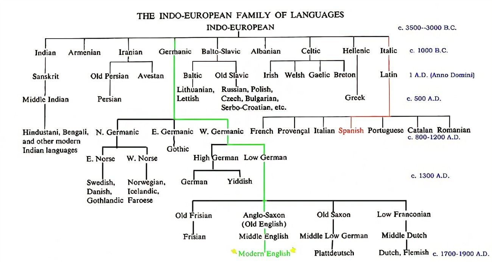

Within this introduction, you will be able to grow an appreciation for
Latin and its descendants by learning about its origins, its literary
survey through the ages, and its pronunciation system.
Latin's Linguistic History
Within English, there are certain words that have retained, more or
less, their original form that has existed thousands of years ago, and
have retained this form over many different languages like Greek,
Latin, Sankrit, Russian, Old Irish, etc.
Take for example the word brother: in Sankrit, bhrātar, in Greek,
phrātēr, in Latin, frāter, in Anglo-Saxon, brōthor, in Old Irish,
brathir, etc. There are many other cognates (comes from the Latin,
conatus, or born together) that show that they all share a common
progenitor.
Although English ultimately derives from Anglo-Saxon, it shares a
common ancestor with all of the aforementioned languages. This common
ancestor is known as Indo-European. It is called as such because it
has roots in both India and Europe. On top of cognates, languages like
Greek, Sanskrit, Latin, etc, all share common inflections, or word
endings.

Now to explain the difference between cognate and derived languages.
On the one hand, one can say that Latin and English are cognate
languages but they are more like cousins. They share the same
grandparents but not the same parents. The parent of Latin is Italic
whereas the parent for English is Anglo-Saxon. On the other hand,
derived languages are like siblings in that they share the same
parent. For an example, Romance languages derive from
Latin, thus being siblings.
As a result of the Roman conquest of Europe, modern Romance langauges
derive from the same parent, that is Latin. Since
Rome was able to conquer these areas, the plebians from each section
mixed their own dialect with the Latin of the rulers, thereby creating
the modern Romance languages overtime.
Now for the history of English. After the German barbarians conquered
most of British Isle, a new language was formed called Anglo-Saxon.
This language had some Latin borrowings but overtime took more and
more, especially in the 7th ce when the Catholic church sent monks to
the island to Christianize them. As a result, the Latin of Jerome
seeped into Anglo-Saxon. Then, in 1066, after the Normans had
conquered the isle, Norman French became the language of high society
whereas Anglo-Saxon remained in use by the plebians. However, two
centuries later, Anglo-Saxon reasserted itself and became used by the
high class once again, but this time with many borrowings from French.
Having been infused with French, Anglo-Saxon became Middle English in
the 13th and 14th ce. Continuing into the Elizabethean Renaissance and
the 16th/17th ce, English continued to take more from French and Latin
in order to cultivate itself and bloom into a respected language. Even
today, scientists and academics continue to take from Latin in order
to coin new words into English.
Now to finish this section, let's discuss something called Grimm's
law. This explains how certain consonants changed over the evolution
of Germanic languages, including English. The Latin hard p became a
softened f (pēs -> foot), the hard c or k became h (cor -> heart) and
d became t (dēns -> tooth).
A Brief Survey of Latin Literature
Here is a brief overview of the chronology of Latin literature:
Archaic through Early Republican Period (down to ~80 BC)
Late Republican and Augustan Period (Golden Age; 80 BC - AD 14)
Ciceronian Period (80-43 BC)
Augustan Period (43 BC - AD 14)
Post-Augustan Period (Silver Age; AD 14 - 138)
Patristic Period (late 2nd - 5th ce)
Medieval Period (6th - 14th ce)
Renaissance (15th ce) to Present
Archaic through Early Republican Period (down to ~80 BC)
6th and 5th ce BC
In contrast to Greek litterae, the Roman's was in poor state during
the 6th and 5th ce BC. Evidence from this time period shows that the
state of their literature was unremarkable. Mostly a few poems written
in the Saturnian meter, some comical skits, and some simple prose for
speeches and record keeping have been found.
3rd ce BC
During this time period, Rome expanded and came into contact with the
Greeks, whom they admired and from whom they learned the art of
literature. The Greeks taught the Romans their literary forms,
rhetorical devices, subjects, and ideas which all contributed to the
progression of Roman literary culture.
Two high examples of this Greek refinement can be found in Plautus
(254 - 184 BC) and Terence (189 - 159 BC) who both adapted the Greek
model of Comedy into Latin. Both of their works continued to influence
European literature 1800 years after their deaths in Molière and
Shakespeare.
Late Republican and Augustan Period (Golden Age; 80 BC - AD 14)